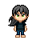
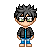
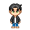
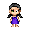
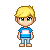

Miembros del equipo:
- Lidia Barja Diez.
- Miguel Pérez de la Rubia.
- Agustín Jofre Millet.
- Alberto Caballero Gámez.
- Beatriz Villegas Sánchez.
- Georgi Kirilov Tsirov.
Lidia Barja Diez
Aptitudes transcendentes: Brazo derecho del equipo, representante del Grado de Ingenieria Informatica.. su versatilidad nos dara el potencial que nos hace falta.
Contacto: lbarja@ucm.es
Miguel Pérez de la Rubia 
Aptitudes transcendentes: Miembro mas perspicaz del grupo, se mesa la barba con destreza (El que pone la pasta..)
Contacto: miguep06@ucm
Agustin Jofre Millet 
Aptitudes transcendentes: Sabio y diseñador del equipo.. sabe todo lo necesario para crear estilo.. pese a ser zurdo.
Contacto: ajofre@ucm.es
Alberto Caballero Gámez 
Aptitudes transcendentes: Estudiante en Igenieria de Computadores, en la Universidad Complutense de Madrid, todavia no graduado pero casi.. o eso cree.
Contacto: alberc01@ucm.es
Beatriz Villegas Sánchez 
Aptitudes transcendentes: Perfeccionista y razonable siempre que tenga la razon, aunque sea un poco zurda.
Contacto: beaville@ucm.es
Georgi Kirilov Tsirov 
Aptitudes transcendentes: Electronico del equipo, hombre de pocas palabras, pero todo lo que dice tiene sentido... si sabes Búlgaro.
Contacto: georgiki@ucm.es